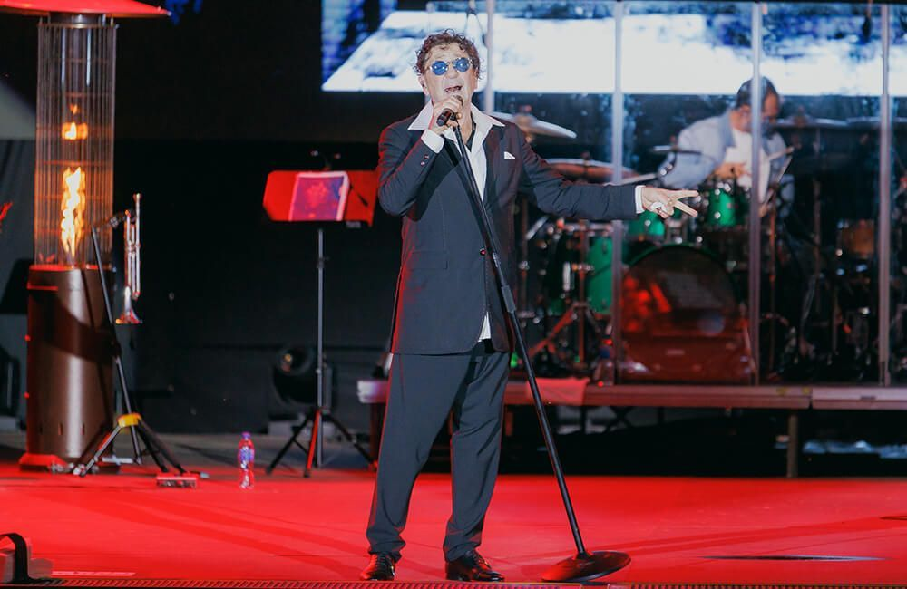

Настоящее имя певца — Григорий Викторович Лепсверидзе. Свою музыкальную карьеру он начал в ресторанах города Сочи. Позже артист переехал в Москву и стал известным по всей стране.
Среди популярных песен певца можно выделить «Рюмка водки на столе» и «Самый лучший день». Артист получил множество музыкальных наград.
Вернуться на главную страницу